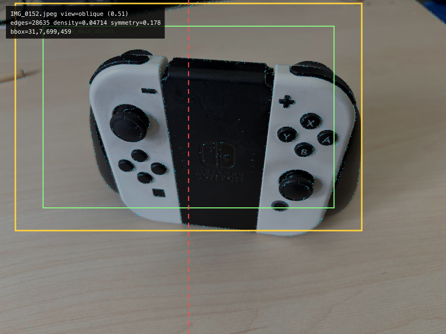
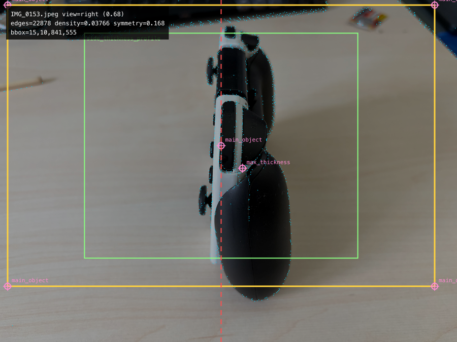
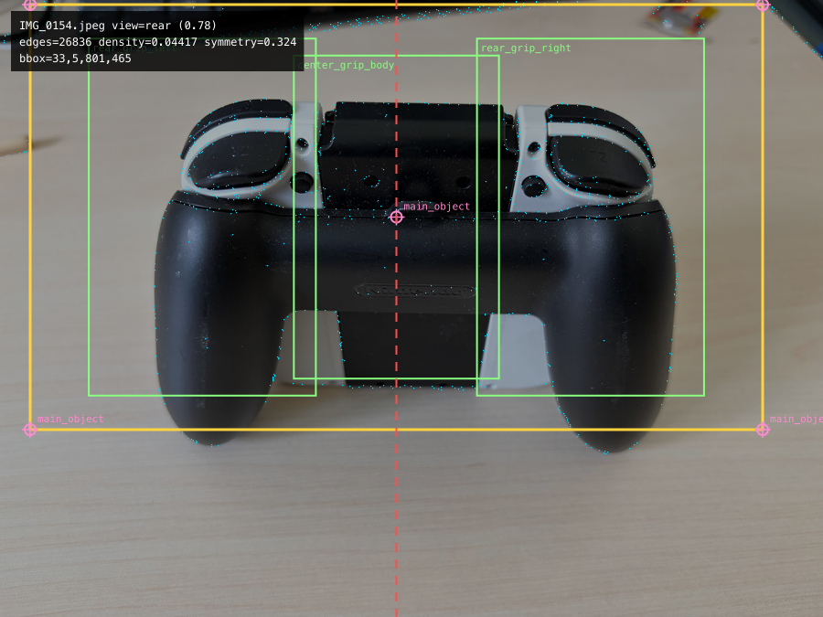
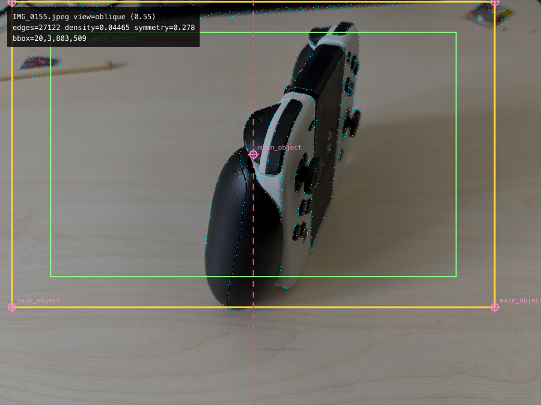
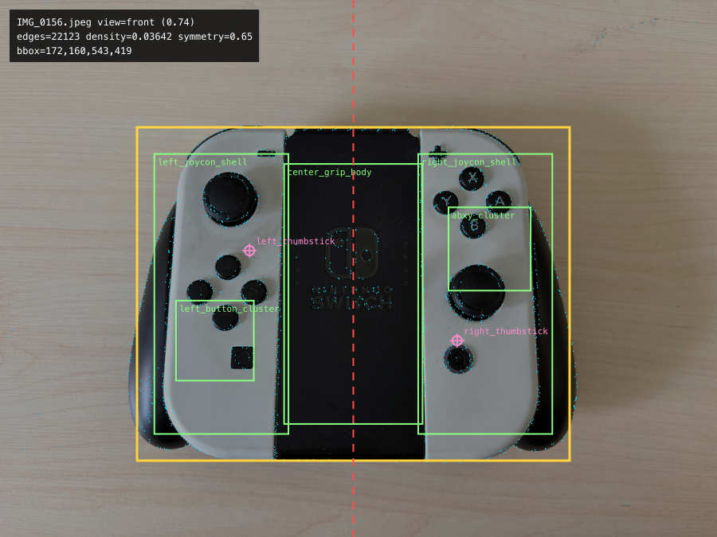
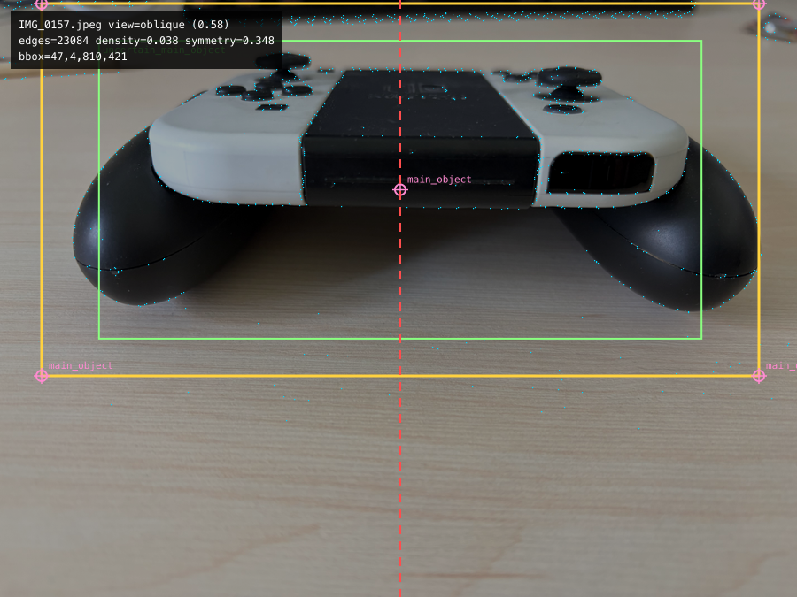

IMG_0152.jpeg
obliqueconfidence 0.51
edges 28635 · density 0.04714 · symmetry 0.178
Component Candidates
uncertain_main_object
Risks
- weak vertical symmetry signal
- view kind needs manual confirmation
Generated from deterministic CV baseline plus optional manual corrections. Review before queue runtime export.
obliquerightrearfront
top
0 part corrections5 applied
width 280 · height 155 · depth 42 · confidence 0.62
observed 7inferred 2template 0manual 0
obliquerightrearfront
| Part | Required Views | Confirmed Views | Missing | Conflicts / Questions |
|---|---|---|---|---|
center_grip_bodyobserved template prior |
front, rear | rear, front | none | template_candidate_used: One or more candidate records came from a layout/template heuristic.; template_prior_used: Profile prior contributes to this part; review before considering it image-confirmed.; center_grip_body: review template-derived candidate boxes before accepting dimensions.; center_grip_body: review profile-prior dimensions and feature semantics. |
left_joycon_shellobserved template prior |
front | front | none | template_candidate_used: One or more candidate records came from a layout/template heuristic.; template_prior_used: Profile prior contributes to this part; review before considering it image-confirmed.; left_joycon_shell: review template-derived candidate boxes before accepting dimensions.; left_joycon_shell: review profile-prior dimensions and feature semantics. |
right_joycon_shellobserved template prior |
front | front | none | template_candidate_used: One or more candidate records came from a layout/template heuristic.; template_prior_used: Profile prior contributes to this part; review before considering it image-confirmed.; right_joycon_shell: review template-derived candidate boxes before accepting dimensions.; right_joycon_shell: review profile-prior dimensions and feature semantics. |
rear_grip_pairobserved template prior |
rear, right | right, rear | none | template_candidate_used: One or more candidate records came from a layout/template heuristic.; template_prior_used: Profile prior contributes to this part; review before considering it image-confirmed.; rear_grip_pair: review template-derived candidate boxes before accepting dimensions.; rear_grip_pair: review profile-prior dimensions and feature semantics. |
left_thumbstickobserved template prior |
front | front | none | template_candidate_used: One or more candidate records came from a layout/template heuristic.; template_prior_used: Profile prior contributes to this part; review before considering it image-confirmed.; left_thumbstick: review template-derived candidate boxes before accepting dimensions.; left_thumbstick: review profile-prior dimensions and feature semantics. |
right_thumbstickinferred template prior |
front | front | none | template_candidate_used: One or more candidate records came from a layout/template heuristic.; template_prior_used: Profile prior contributes to this part; review before considering it image-confirmed.; right_thumbstick: review template-derived candidate boxes before accepting dimensions.; right_thumbstick: review profile-prior dimensions and feature semantics. |
abxy_clusterobserved template prior |
front | front | none | template_candidate_used: One or more candidate records came from a layout/template heuristic.; template_prior_used: Profile prior contributes to this part; review before considering it image-confirmed.; abxy_cluster: review template-derived candidate boxes before accepting dimensions.; abxy_cluster: review profile-prior dimensions and feature semantics. |
left_button_clusterinferred template prior |
front | front | none | template_candidate_used: One or more candidate records came from a layout/template heuristic.; template_prior_used: Profile prior contributes to this part; review before considering it image-confirmed.; left_button_cluster: review template-derived candidate boxes before accepting dimensions.; left_button_cluster: review profile-prior dimensions and feature semantics. |
shoulder_rail_pairobserved template prior |
right | right | none | template_prior_used: Profile prior contributes to this part; review before considering it image-confirmed.; shoulder_rail_pair: review profile-prior dimensions and feature semantics. |
confirmed 2partial 7needs review 0strategy graph_cross_view_semantic_fusion
fallback 0template prior 9
| Part | Status | Decision | Confidence | Signals | Review Flags |
|---|---|---|---|---|---|
center_grip_bodyflush |
confirmed | cross_view_confirmed | 0.687 | coverage 1; sources 2/2; mapping 0.5 | template_prior |
left_joycon_shellflush |
partial | single_view_confirmed | 0.691 | coverage 1; sources 1/1; mapping 0.5 | template_prior |
right_joycon_shellflush |
partial | single_view_confirmed | 0.691 | coverage 1; sources 1/1; mapping 0.5 | template_prior |
rear_grip_pairconvex |
confirmed | cross_view_confirmed | 0.7 | coverage 1; sources 3/3; mapping 0.5 | template_prior |
left_thumbstickconvex, blind_recess |
partial | single_view_confirmed | 0.711 | coverage 1; sources 1/1; mapping 0.5 | template_prior |
right_thumbstickconvex, blind_recess |
partial | single_view_confirmed | 0.667 | coverage 1; sources 1/1; mapping 0.5 | template_prior |
abxy_clusterconvex |
partial | single_view_confirmed | 0.704 | coverage 1; sources 1/1; mapping 0.5 | template_prior |
left_button_clusterconvex |
partial | single_view_confirmed | 0.667 | coverage 1; sources 1/1; mapping 0.5 | template_prior |
shoulder_rail_pairconvex |
partial | single_view_confirmed | 0.677 | coverage 1; sources 1/1; mapping 0.5 | template_prior |
Select suggested patches, edit the JSON payload, then copy or download it for projects/image-structured-modeler/examples/switch-controller/manual-corrections.json.
| Part | Reason | Patch |
|---|---|---|
center_grip_body |
center_grip_body: review template-derived candidate boxes before accepting dimensions. | {"id":"center_grip_body","action":"update","evidence_status":"manual_confirmed","manual_confirmed":true,"template_prior":false,"feature_semantics":["flush"],"evidence_note":"Reviewer confirmed center_grip_body; replace this note with the view/feature evidence used."} |
left_joycon_shell |
left_joycon_shell: review template-derived candidate boxes before accepting dimensions. | {"id":"left_joycon_shell","action":"update","evidence_status":"manual_confirmed","manual_confirmed":true,"template_prior":false,"feature_semantics":["flush"],"evidence_note":"Reviewer confirmed left_joycon_shell; replace this note with the view/feature evidence used."} |
right_joycon_shell |
right_joycon_shell: review template-derived candidate boxes before accepting dimensions. | {"id":"right_joycon_shell","action":"update","evidence_status":"manual_confirmed","manual_confirmed":true,"template_prior":false,"feature_semantics":["flush"],"evidence_note":"Reviewer confirmed right_joycon_shell; replace this note with the view/feature evidence used."} |
rear_grip_pair |
rear_grip_pair: review template-derived candidate boxes before accepting dimensions. | {"id":"rear_grip_pair","action":"update","evidence_status":"manual_confirmed","manual_confirmed":true,"template_prior":false,"feature_semantics":["convex"],"evidence_note":"Reviewer confirmed rear_grip_pair; replace this note with the view/feature evidence used."} |
left_thumbstick |
left_thumbstick: review template-derived candidate boxes before accepting dimensions. | {"id":"left_thumbstick","action":"update","evidence_status":"manual_confirmed","manual_confirmed":true,"template_prior":false,"feature_semantics":["convex","blind_recess"],"evidence_note":"Reviewer confirmed left_thumbstick; replace this note with the view/feature evidence used."} |
right_thumbstick |
right_thumbstick: review template-derived candidate boxes before accepting dimensions. | {"id":"right_thumbstick","action":"update","evidence_status":"manual_confirmed","manual_confirmed":true,"template_prior":false,"feature_semantics":["convex","blind_recess"],"evidence_note":"Reviewer confirmed right_thumbstick; replace this note with the view/feature evidence used."} |
abxy_cluster |
abxy_cluster: review template-derived candidate boxes before accepting dimensions. | {"id":"abxy_cluster","action":"update","evidence_status":"manual_confirmed","manual_confirmed":true,"template_prior":false,"feature_semantics":["convex"],"evidence_note":"Reviewer confirmed abxy_cluster; replace this note with the view/feature evidence used."} |
left_button_cluster |
left_button_cluster: review template-derived candidate boxes before accepting dimensions. | {"id":"left_button_cluster","action":"update","evidence_status":"manual_confirmed","manual_confirmed":true,"template_prior":false,"feature_semantics":["convex"],"evidence_note":"Reviewer confirmed left_button_cluster; replace this note with the view/feature evidence used."} |
shoulder_rail_pair |
shoulder_rail_pair: review profile-prior dimensions and feature semantics. | {"id":"shoulder_rail_pair","action":"update","evidence_status":"manual_confirmed","manual_confirmed":true,"template_prior":false,"feature_semantics":["convex"],"evidence_note":"Reviewer confirmed shoulder_rail_pair; replace this note with the view/feature evidence used."} |

obliqueconfidence 0.51
edges 28635 · density 0.04714 · symmetry 0.178
uncertain_main_object

rightconfidence 0.68
edges 22878 · density 0.03766 · symmetry 0.168
side_thickness_profile

rearconfidence 0.78
edges 26836 · density 0.04417 · symmetry 0.324
rear_grip_leftcenter_grip_bodyrear_grip_right

obliqueconfidence 0.55
edges 27122 · density 0.04465 · symmetry 0.278
uncertain_main_object

frontconfidence 0.74
edges 22123 · density 0.03642 · symmetry 0.65
left_joycon_shellcenter_grip_bodyright_joycon_shellabxy_clusterleft_button_cluster

obliqueconfidence 0.58
edges 23084 · density 0.038 · symmetry 0.348
uncertain_main_object
| Part | Type | Status | Evidence Sources | Semantics | Uncertainty |
|---|---|---|---|---|---|
center_grip_body |
beveled_panel | observed template prior |
rear_photo:silhouette (0.6), front_photo:silhouette (0.62) | flush feature op pending |
|
left_joycon_shell |
lofted_shell | observed template prior |
front_photo:silhouette (0.62) | flush feature op pending |
|
right_joycon_shell |
lofted_shell | observed template prior |
front_photo:silhouette (0.62) | flush feature op pending |
|
rear_grip_pair |
grip_handle | observed template prior |
side_photo:silhouette (0.58), rear_photo:silhouette (0.68), rear_photo:silhouette (0.68) | convex feature op pending |
|
left_thumbstick |
analog_stick | observed template prior |
front_photo:center_point (0.68) | convex, blind_recess feature op pending |
|
right_thumbstick |
analog_stick | inferred template prior |
front_photo:center_point (0.55) | convex, blind_recess feature op pending |
Inferred from Switch controller layout; current photos need semantic confirmation. |
abxy_cluster |
button_on_panel | observed template prior |
front_photo:silhouette (0.66) | convex feature op pending |
|
left_button_cluster |
button_on_panel | inferred template prior |
front_photo:silhouette (0.55) | convex feature op pending |
Button labels and exact positions need manual review. |
shoulder_rail_pair |
trigger | observed template prior |
side_photo:silhouette (0.58) | convex feature op pending |
| Operation | Count |
|---|---|
reset | 1 |
material | 6 |
component_definition | 1 |
rounded_box | 6 |
domed_surface | 2 |
bowed_panel | 2 |
analog_stick | 2 |
button_on_panel | 8 |
component_instance | 4 |
screw_hole | 4 |
scene | 2 |
style | 1 |
shadow | 1 |
rendering_options | 1 |
observationsPath: projects/image-structured-modeler/examples/switch-controller/observations.jsonmodelPlanPath: projects/image-structured-modeler/examples/switch-controller/model-plan.jsonoutputDslPath: projects/image-structured-modeler/examples/switch-controller/output.jsoncorrectionsPath: projects/image-structured-modeler/examples/switch-controller/manual-corrections.json